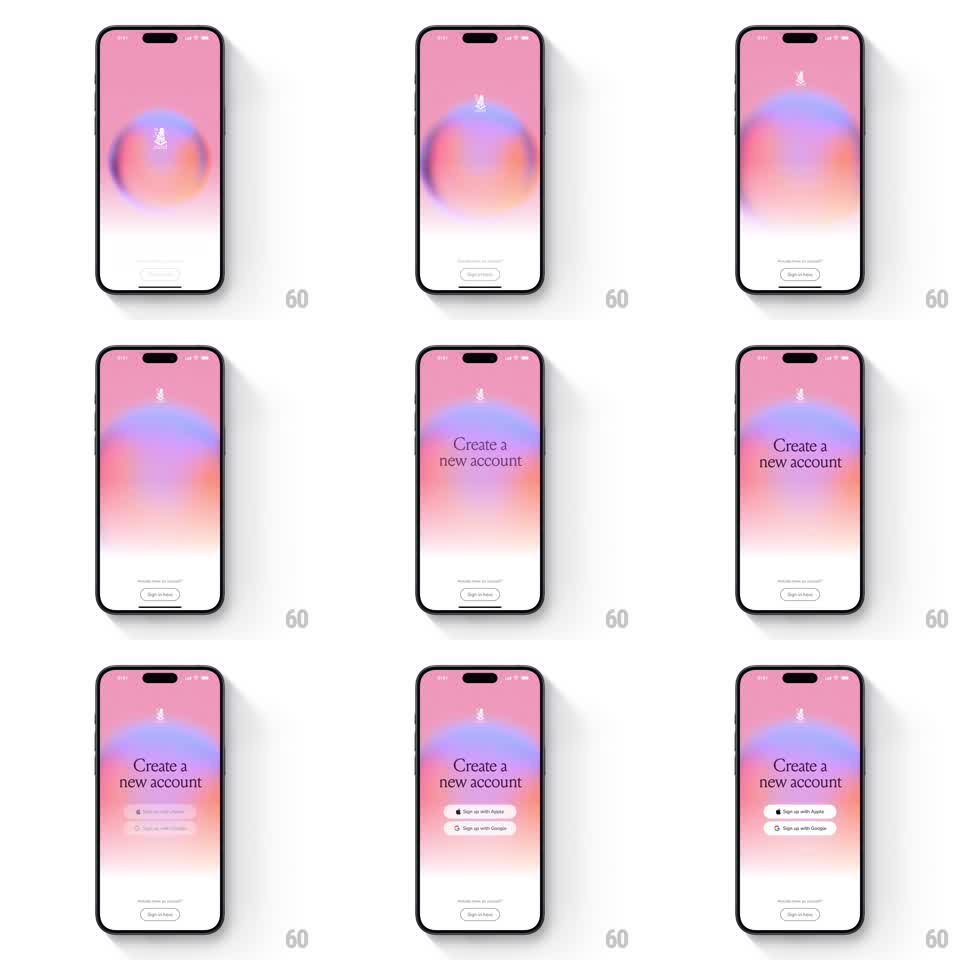

Media
Frame-by-frame

Rebuild this animation 1:1: Mymind's splash intro - a pink screen with a soft blurred gradient orb and logo gives way to staggered slide-up and fade-in reveals of the "Create a new account" heading and the Apple/Google sign-up buttons.

Rebuild this animation 1:1: Mymind's splash intro - a pink screen with a soft blurred gradient orb and logo gives way to staggered slide-up and fade-in reveals of the "Create a new account" heading and the Apple/Google sign-up buttons. ## Integration Integration: stack-agnostic spec - springs given as stiffness/damping, timed motions as duration + curve; map every value to your framework and animation library of choice. ## Scene Full-bleed pink screen: a large soft-focus gradient orb (violet, coral, peach) floats above center with the small mymind logo inside, tagline line and a single "Sign up here" button at the bottom. The onboarding state adds a serif "Create a new account" heading and two stacked white buttons (Sign up with Apple, Sign up with Google) above a "Already have an account? Sign in here" link. ## Motion spec Pattern: staggered slide-up + fade-in transition, ~1.4s. - Hold: the orb drifts slowly (scale 1 -> 1.05, 6s loop) while the gradient hues shift subtly. - Transition: the bottom button row fades and slides down 12px (200ms) as the heading types in line by line - "Create a" then "new account" (each 250ms slide-up 16px + fade, 120ms apart). - Buttons: Sign up with Apple then Sign up with Google slide up 20px and fade in (300ms, ease-out, 100ms stagger), landing with a soft settle (translateY -2px -> 0). - Footer: the sign-in link fades in last (200ms, +100ms delay). ## Calibration - The orb never disappears during the transition - it stays as the backdrop anchor. - Heading reveal is two lines, not a word-by-word cascade. ## Reduced motion Full onboarding state cross-fades in at once (250ms); orb stays static. ## Don't miss - The gradient orb is heavily blurred with soft edges - crisp shapes lose the feel. - Buttons are white with black text and tiny provider logos, rounded-full.